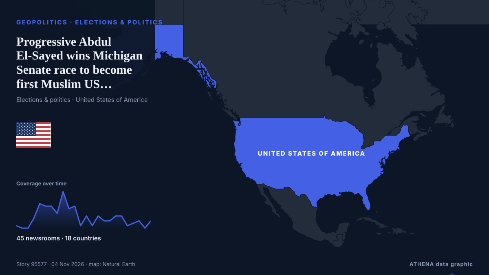

الجغرافيا السياسية والسياسة والأمن
برعايةبرعاية  Cybernetics and Artificial Intelligence Lab Welcome to the Cybernetics and Artificial Intelligence Laboratory, established at the Department of Business Administration of the National and Kapodistrian University of Athens. The lab is headed by Professor Dimitrios Thomakos. The lab aims to do research that can be published in top venues. Our research uses tools and methods of Artificial Intelligence, and lies in the following areas: - Forecasting - Decision making - Cyber security - Finance We are always looking forward to collaborating with exceptional students!
Cybernetics and Artificial Intelligence Lab Welcome to the Cybernetics and Artificial Intelligence Laboratory, established at the Department of Business Administration of the National and Kapodistrian University of Athens. The lab is headed by Professor Dimitrios Thomakos. The lab aims to do research that can be published in top venues. Our research uses tools and methods of Artificial Intelligence, and lies in the following areas: - Forecasting - Decision making - Cyber security - Finance We are always looking forward to collaborating with exceptional students!
تُعرض العناوين بالإنجليزية كما نُشرت.

الانتخابات والسياسةProgressive Abdul El-Sayed wins Michigan Senate race to become first Muslim US senator
نشرته 45 مصدرًا في 18 دولة منذ 1 نوفمبر. أول من نشره: Mainichi (English). يقدّر ATHENA الخطر بـ2.5/10 (معتدل)، بثقة 89٪.
| 22 أكتوبر | 272 |
|---|---|
| 23 أكتوبر | 251 |
| 24 أكتوبر | 175 |
| 25 أكتوبر | 179 |
| 26 أكتوبر | 318 |
| 27 أكتوبر | 278 |
| 28 أكتوبر | 236 |
| 29 أكتوبر | 244 |
| 30 أكتوبر | 285 |
| 31 أكتوبر | 152 |
| 1 نوفمبر | 205 |
| 2 نوفمبر | 297 |
| 3 نوفمبر | 251 |
| 4 نوفمبر | 51 |
Israel's election commission says no fraud found in last week's vote
LONDON: It is a measure of how much is at stake in Tuesday’s legislative election in Israel, and how finely balanced the outcome might be, that a record 22,000 police officers have been deployed in… من Arab News
US Midterms: Democrats take control of US Congress as voters reject Trump’s Republicans
Democrats have taken control of both chambers of the United States Congress in the November 3, 2026, midterm elections, dealing a major political setback to President Donald Trump and his Republican… من Vanguard
Keisha Lance Bottoms wins Georgia race, becomes first Black woman elected governor of US state
Democrat Keisha Lance Bottoms' win marks a significant shift in Georgia state politics, where Black voters have formed a central part of the Democratic coalition that helped to turn the reliably… من CNA (Channel NewsAsia)
Lone Star turns blue: Democrats Talarico, Hinojosa topple Texas Republicans
Democrat James Talarico, a former schoolteacher and Presbyterian seminarian who campaigned on a “politics of love,” on Tuesday won the US Senate race in Texas, dealing a historic blow to Republicans… من Dawn
US Midterms: Trump accepts midterm results, pledges to work with Democrats
Democrats remain ahead in national polls as Trump and candidates make their final push in the days before polling day. من Al Jazeera English
Democrat Amy Acton beats Republican Vivek Ramaswamy in Ohio governor’s race
Acton is the first Democrat to become governor of Ohio since 2006. من Al Jazeera English
US midterms: Democrat Annie Andrews wins US Senate seat in South Carolina upset over Darline Graham
Andrews, a paediatrician, is the first Democrat to win a Senate seat in South Carolina in 28 years. من The Straits Times
LOCAL ELECTIONS 2026: LIVE | South Africa votes in the 2026 local government election
Special voting gets underway on Monday and will continue on Tuesday. من SABC News
Kremlin confirms trilateral talks on Ukraine set for Nov 10-11 in Abu Dhabi
The United States will bring together delegations from Ukraine and Russia in Abu Dhabi on November 10-11 to discuss ending Russia's conflict with Ukraine, post-conflict security agreements and… من CGTN (World)
Democrat Jon Ossoff wins reelection to US Senate in Georgia
Ossoff defeats Trump-backed Republican Mike Collins, securing 2nd term in key battleground state. من Anadolu Agency (English)
US strikes Iran’s Qeshm island – Report
The US has not publicly announced the attacks, so as not to signal any intention of resuming major combat operations, the Wall Street Journal reported. من CNA (Channel NewsAsia)
Lula Can Fill Six Brazil Central Bank Seats
Our experts unpack what Lula’s victory means for Brazil’s ties with Washington and how it could reshape a region trending right. من Atlantic Council
2,800 troops to join first Ukraine support force exercise in Poland
The drill will simulate moving troops and supplies such as food and fuel, and was agreed at a Coalition of the Willing summit in July. من The Independent
First polls close in closely watched U.S. midterm elections
The US midterm elections next month could change the course of American politics at home and – and American policy abroad. من The National
Death toll hits 29 after Russian strike on Ukrainian aid site, with 48 still missing
Russia launched 289 attack drones, 17 ballistic missiles and 59 cruise missiles across nine regions, President Zelenskyy said in an online post that noted the barrage coincided with U.S. elections. من NPR
Iran-US deal still out of reach despite heightened diplomatic efforts
Iran and the United States are far from reaching a deal to end the war, a senior Iranian official told Reuters on Tuesday, despite heightened diplomatic efforts to prevent a potential return to… من Arab News
Russian strike on Kharkiv hospital raises injury toll to 73
In Kharkiv, 73 people were injured as a result of a Russian attack on the night of November 3. من Ukrinform (English)
Indian Navy Rescues 20 Crew Members From Hijacked Iranian Vessel off Somalia
Airborne commandos recapture fishing boat seized by pirates as attacks off the Somali coast rise to their highest level since 2013. من Kurdistan24 (English)
Neighbors are Iran's priority, Araghchi says
Iran's Qalibaf says progress only possible when Tehran's seven conditions are met Iran's parliament speaker said on Thursday that Tehran's conditions had been repeatedly and clearly communicated to… من Middle East Eye
UK PM Burnham says he is ‘open’ to formal apology for slavery, but rules out reparations
At least 12.5 million Africans were abducted and sold into slavery. من Express Tribune
Netanyahu Is Pressing Trump to Attack Iran After the Midterms, Officials Say
Democratic doctors aim to convert the backlash against the Trump administration’s health policies into midterm votes. من Al Jazeera English
Israeli strikes kill three people in Gaza, medics say
Israeli strikes killed at least three Palestinians and wounded several others in the Gaza Strip on Monday, the territory’s health officials said. من Cyprus Mail
N. Korea tests 'dispersal warhead' for cruise missiles following cluster bomb test
SEOUL, Nov. 3 (Yonhap) -- North Korea has tested a "dispersal warhead" for a str... من Yonhap (English)
Belgian PM offers resignation over budget, king defers decision
Belgian Prime Minister Bart De Wever tendered his resignation on Monday after budget talks failed, the Royal Palace said in a statement on X, adding that King Philippe had deferred a decision on… من CGTN (World)
Russia arrests minor after US Embassy warns of ‘credible threat of a mass casualty event’ in Moscow
Russia’s Federal Security Service says detainee posted TikTok videos showing object resembling weapon at Moscow museum-reserve. من Anadolu Agency (English)
UN peacekeeping mission in Western Sahara ends after 35 years
Morocco, which claims the Western Sahara as its own, welcomed the decision, while its opponents in the Algeria-backed Polisario Front expressed concern. من Free Malaysia Today
Oleshky ceasefire expires, Ukraine evacuates civilians from parts of Kherson region
Nov 1 - Ukraine's military said it evacuated 167 people from threatened areas of southern Kherson region on Sunday as a temporary local ceasefire expired — two days after buses carried residents out… من The Straits Times
US delivery of 500 Patriot missiles to Ukraine will span 3 years starting in 2030
NATO Supreme Allied Commander Europe General Alexus Grynkewich said the United States continues to supply Ukraine with Patriot interceptor missiles, as well as weapons packages paid for by European… من Ukrinform (English)
Iranians Have Left Doha Talks, Draft Proposal for US Deal Being Circulated, Official Says
Nov 2 (Reuters) - Iranian negotiators have left talks with Qatari mediators aimed at ending the war with the United States, and a draft proposal is being circulated with a follow-up meeting possible… من Al-Monitor
Presidential runoff Iotova Wins over 85% of Votes in Bulgaria's Presidential Runoff in Moldova
Bulgarians voted Sunday in a presidential runoff between two candidates with opposing views on the Ukraine war and relations with Russia as tensions mount in the Black Sea. من France 24 English
Presidential Runoff Turnout Stands at 19.33% as of 16:00
Voter turnout in Bulgaria’s presidential and vice-presidential election stood at 2.4% as of 9:00 a.m.... من Novinite
Saudi civil defence sounds all-clear after alerts in southern cities
Nov 2 - Saudi Arabia's civil defence authority on Monday said the threat had passed shortly after issuing alerts for the southern and western cities of Khamis Mushait, Abha, Taif and Najran, amid… من The Straits Times